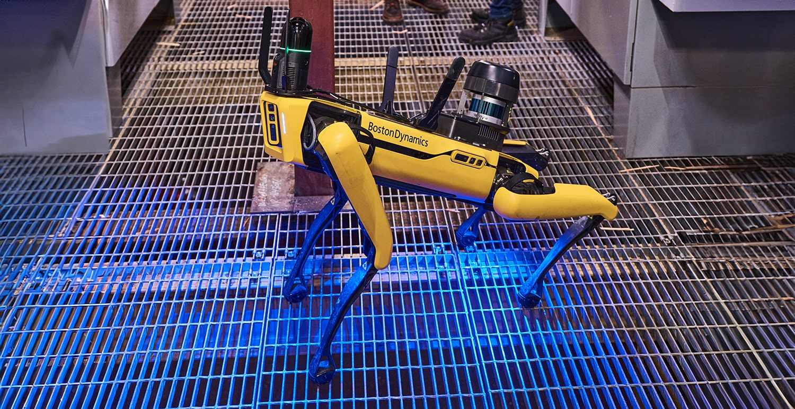

One autonomous Boston Dynamics Spot mission, three BRIDGE products, three Industry 5.0 pillars. Spot patrols the floor while CORE, NEXACTO and ARIS turn what it sees into resilient operations, automated quality, and human-centric guidance — in real time.

Streaming to BRIDGEOne mission — what it proves
Spot walks a fixed route. At each station it captures data and hands it to a different BRIDGE product — so a single walk tells the whole Industry 5.0 story.
Spot CAM+IR reads the analog gauge and detects a bearing trending hot. The reading streams in as live OEE / condition telemetry — predictive maintenance before failure.
Feeds → BRIDGE CORESpot images parts on the line; a vision model flags a micro-defect a human would miss on a quick pass. The robot finds it; the engineer judges the root cause.
Feeds → BRIDGE NEXACTOThe moment a fault is raised, a context-aware work instruction lands on a worker’s tablet or AR headset — and the fix is captured as reusable tribal knowledge.
Feeds → BRIDGE ARISEach station maps cleanly onto an Industry 5.0 pillar and a BRIDGE product — the same framework from the main article, now demonstrable on hardware.
Spot’s autonomous rounds give CORE a continuous condition signal, so disruptions are predicted and prevented rather than discovered too late.
BRIDGE COREThe robot handles the dull, dirty and dangerous patrol; people get clear guidance at the point of need, and expert know-how is captured before it retires.
BRIDGE ARISThermal scanning surfaces energy leaks and overheating early, while NEXACTO’s quality catch reduces scrap and rework — less waste, less energy per unit.
BRIDGE NEXACTOWe already own Spot, so this is the add-on kit that turns it into a full three-module showcase. The minimum viable buy is marked — the rest are “wow” upgrades.
| Item | What it enables (BRIDGE module) | Approx. cost (USD) |
|---|---|---|
| Boston Dynamics Spot WE OWN IT | The mobile platform for all three stations | — |
| Spot CAM+IR payload (PTZ + thermal) MVP | Gauge reading & thermal anomaly → CORE | ~$28k–$32k |
| Spot Dock (self-charging) MVP | Unattended, repeatable autonomous patrols | ~$15k |
| BD Orbit (mission & fleet software) MVP | Records / replays missions, exposes inspection data via API → CORE | Subscription (quote) |
| Rugged worker tablet (e.g. Galaxy Tab Active / Zebra ET40) MVP | Receives work instructions → ARIS | ~$600–$900 |
| Spot Arm | Opens panels, presses buttons, aims camera at awkward gauges — big visual “wow” | ~$60k–$70k |
| AR headset (RealWear Navigator 520 or HoloLens-class) | Hands-free guidance → stronger ARIS human-centric demo | ~$2.5k–$3.5k |
| IIoT sensors (vibration/temp) on the demo machine | Second live data source beside Spot → CORE | ~$200–$500 ea |
Prices are indicative for planning; confirm current figures with Boston Dynamics and vendors at quote time.
The hardware is commodity; the Spot ↔ BRIDGE pipeline is the differentiator. Five steps from patrol to a unified dashboard your manager can forward upward.
Define a waypoint mission that captures RGB images, IR/thermal frames and gauge OCR at each station.
On mission complete, push structured readings to a BRIDGE CORE endpoint — Spot becomes just another machine emitting OEE / condition telemetry.
POST Spot’s part images to the NEXACTO model endpoint; render defect verdicts on the same dashboard.
When CORE or NEXACTO raise a fault, fire an ARIS work instruction to the tablet / AR headset — closing the connected-worker loop.
All three feeds live on a single screen — the screenshot that sells the Industry 5.0 story in one glance.
Pair this concept with the Industry 5.0 explainer: the article sets the vision, this mission proves it live on the floor. Let’s talk through it together.